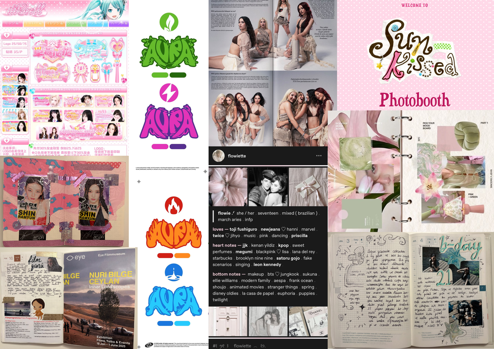

class: center, middle <!-- In deze textarea kan je in Markdown de slides aanpassen, zie https://github.com/gnab/remark/wiki voor alle mogelijkheden! --> # Betül's Space [betulspace.nl](betulspace.nl) --- # Agenda 1. Mijn Onderwerp 2. Inspiratie Bronnen 3. 50 afbeeldingen 4. ...(max 11 slides, 15 totaal) 5. introtekst van max. 180 tekens --- ## Onderwerp Wat is jouw interesse, waarom, wat, hoe (cultuur, vakmanschap, sport, idool, hobby, passie categorie enz.) toon een hoeveelheid afbeeldingen. --- ## Inspiratie Bronnen - [The Culture of Fangirling](https://medium.com/@kshravani744/the-culture-of-fangirling-2b6b46b02e89) - [A Deep Dive into Fangirl Culture](https://afractionofmymind.substack.com/p/a-deep-dive-into-fangirl-culture) - [Why Sexism Drives the Shaming of Fangirls](https://www.hotpress.com/opinion/sexism-drives-shaming-fangirls-22795025) - [Why Our Passions Change, and Why That's OK](https://www.psychologytoday.com/us/blog/shadow-boxing/201408/why-our-passions-change-and-why-thats-ok) - [Kpopping (database)](https://kpopping.com/) - [Let Your Hobbies Enhance Your Career](https://blog.annabyang.com/let-your-hobbies-enhance-your-career/) Omdat ik wilde dat de website ook informatief zou zijn, heb ik onderzocht vanuit welke invalshoeken ik het onderwerp fangirlen zou kunnen benaderen. --- ## Zoek 50 afbeeldingen Waarom kies je specifiek voor deze verzameling? Zijn er patronen te ontdekken? Heeft alles een specifieke kleurstelling? Herken je een actie, een gevoel, een materiaal of een standpunt? Wat is kenmerkend voor deze verzameling? Welke dingen komen steeds terug? --- <!-- Slide zonder titel! --> Physical materials: giving the feeling that it is hand-made and organic Pop culture: platforms like tumblr used to be a huge thing for fanbases which created a mix of text and images <p></p> --- background-image: url(./placeholder.svg) ... of als [background image](https://github.com/gnab/remark/wiki/Markdown#background-image) voor een slide. --- # Introtekst Wat wil je een ander vertellen over je onderwerp Hoe denk je dit te vertellen met eigen content? en met overige content zoals (links, afbeeldingen, tekst) Schrijf een eerste stukje content als basis voor je garden (maximaal 180 tekens). <!-- Laat onderstaande staan anders breekt je presentatie -->